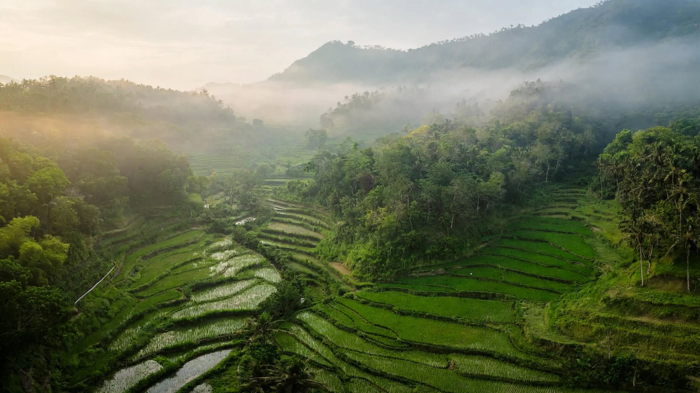
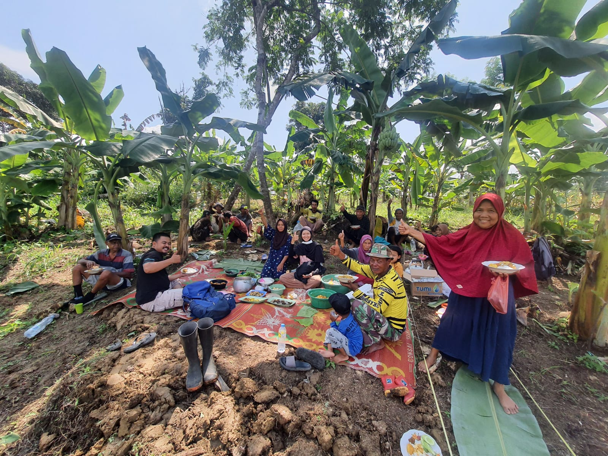

Dengan konsep bermitra untuk saling mendukung, berbagi ilmu dan juga pengalaman diantara Petani dan Mitra Petani dengan tujuan untuk memajukan kesejahteraan bersama, meningkatkan dampak positif dan akses kepada komoditas unggulan yang bisa di hasilkan kepada pasar yang luas dalam kemitraan program pertanian yang berkelanjutan.
